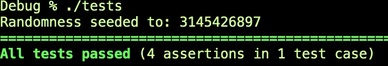

A CMake Starter Project¶
Introduction¶
This article is a follow-on to my recent article, Running the CMake Tutorial in a VS Code Container. Toward the end of that tutorial, we built one of the tutorial steps and debugged it in a VS Code container. Since then, I’ve finished the tutorial and published my solutions set, in case you’re looking for one of those.
My purpose in the present article is twofold. First, if you’re on the verge of working through the tutorial yourself or have just slogged through it, I’ll share my experiences with it in a brief review. We’ll see that the tutorial has some limitations, so we’ll need to dig further into the tool to become more proficient with it. The best way to do that is to actually create a CMake build system for a simple (but flexible) starter project. We’ll do that step by step in the second part of the article.
Of course, I have a project of my own in mind, but I’ll resist the urge to get too far into that code, providing just enough detail so you can easily swap out that code with a project of your own.
Part I: A Brief Review of the CMake Tutorial¶
CMake’s tutorial does a pretty good job of walking you through a lot of the basic CMake properties and functions you’ll need to work with the tool to create libraries and executables (and link them, of course), and it does a fair job of introducing some advanced features like supporting installers, using generator expressions, etc. It’s broken down into a series of steps, each of which consists of a number of exercises. Generally, the exercises point you to the CMake documentation for the functions you’ll need to use, but a hidden section reveals the full code you need if you can’t work it out from the documentation.
For all but the simplest examples, however, this “point them to the documentation” approach suffers from a drawback of the documentation itself, that of not providing sufficient usage examples to be helpful on its own.
A more serious limitation is that there isn’t much discussion of how to work with third-party libraries (beyond the C++ standard library, of course). CMake is a build tool generator, of course, and not a package manager, but it does have some facilities for downloading and building packages. The most modern (and self-contained) of these are provided by the FetchContent module.
Because I’ve drunk a little too deeply over the years from the pitcher of TDD Kool-Aid, the first thing I want to do when creating a new project structure is to set up a way to run unit tests. The CMake tutorial does show you how to do this – so that’s good – but it shows you how to do this as integrated tests you write run from CMake against the main executable. Of course, you can figure out how to use the tools it teaches to integrate with other test systems, but what I really want to know is how to write my tests in a C++ file and build them in CMake like a regular human. Writing tests in a build tool is a lot like jumping off a cliff into the ocean: it’s nice to know it’s an option if murderers are chasing you in a movie, but that hardly makes it a best practice.
Finally, the tool does not go into much depth on best practices around setting up a project. One could argue that that’s not a tutorial’s job. To be sure, it contains a library and an executable, so there’s a starting point for that sort of thing, but many of the best practices enabled by recent enhancements to CMake have been left out. Of course, before working to create a more complex starter project, I wanted to explore some of those best practices. This article has been influenced especially by two resources:
An Introduction to Modern CMake – This is a great overall resource on managing third-party packages. Also, it offers an opinionated sample project structure that I found useful enough as a starting point. It’s light on code, though, so providing that inspired this article.
Enhanced Source File Handling with target_sources – Once you’ve selected a structure for your multi-directory project, this article is well worth consulting for how to keep it from getting difficult to manage.
What You’ll Learn in Part Two¶
By the end of this tutorial:
You’ll know how to set up a multi-folder CMake project, including a build directory containing debug and release builds, and how to automate the process of building. We’ll beg the question a bit here with a plain Makefile (for Gnu Make) (i.e., one different from one that the CMake build process generates as part of the build).
We’ll present a flexible method for including and building any CMake-compatible source that’s hosted in a GitHub repository (or other public repository). We won’t use Conan or other “package repositories” since the universe of open-source CMake projects on GitHub is far larger than the recipes listed on Conan.io (probably the largest such package repository).
We’ll illustrate the above points using the Catch2 unit test framework. However, the technique we show here will work with any framework, so you certainly could if you wanted to substitute GoogleTest (for example). We’ll also add a test target to our “external” Makefile.
Once we have testing in place, we’ll externalize our one test function to a library, which can also be linked to our main application, which we’ll also develop.
The CMake Starter Project: A Test First Approach¶
Beginning from a plain directory, let’s consider what we need. We want to keep our root directory relatively clean with our main CMakeLists.txt project file, our Makefile helper, a README, and our .gitignore file.
Next, simplifying somewhat the suggested structure in the Introduction to Modern CMake site we mentioned earlier, we’ll build out a similar directory structure:
root project directory
test
build
lib
app
Of course, this structure may grow over time, but it’ll do for now. If it’s not obvious what goes where our unit tests will go in test, our main header file and library source will go in lib, our program using the library will go into the app directory, and all our artifacts will go into the build directory and subdirectories of it.
Let’s get started by focusing on our Main CMakeLists.txt file and the test directory. Our root CMakeLists.txt file first:
# source_root/CMakeLists.txt
cmake_minimum_required(VERSION 3.24)
project(Starter VERSION 0.01)
set(CMAKE_CXX_STANDARD 17)
set(CMAKE_CXX_STANDARD_REQUIRED True)
# Test first
add_executable(tests "")
add_subdirectory(test)
Outside of the comment (mainly for this article), the first two things we need are really boilerplate to make CMake work at all – a cmake_minimum_required statement and a project name and version. We’re so-very-creatively calling our starter project “Starter”, and our version number is quite humbly low.
The order of the next two lines (and the other lines we’ll be adding here) is important. In particular, any add_executable or add_library function calls must come before the corresponding add_subdirectory call. The reason for this is that the subdirectory’s CMakeLists.txt file’s job is to configure the target’s sources, dependencies, and so forth by the name we gave it when we added it, and if we haven’t added it yet, that’s bad. The clue will be CMake complaining that you’re trying to do something to a target that’s “not built by this project”.
Now let’s create our test directory and add this file to it:
# test/CMakeLists.txt
target_sources(tests
PRIVATE
test.cpp
)
include(FetchContent)
FetchContent_Declare(
Catch2
GIT_REPOSITORY git@github.com:catchorg/Catch2.git
GIT_TAG 4acc51828f7f93f3b2058a63f54d112af4034503 # devel branch v. 3, as of 8/3/2023
)
FetchContent_MakeAvailable(Catch2)
target_link_libraries(tests PRIVATE Catch2::Catch2WithMain)
This isn’t too long yet, but there’s a fair amount going on that we should stop to consider. First, note the target_sources command that was highlighted in one of the articles we mentioned earlier. We’re saying that the “tests” executable that we added in our root file will have one PRIVATE source file, test.cpp. (“PRIVATE” in the context is a bit redundant for a test executable, but CMake syntax requires it).
Next, we’re going to declare and build our first external dependency. We include the FetchContent module, then make two calls:
FetchContent_Declare takes a name, a repository, and a tag, branch, or commit name (labeled by GIT_TAG in any case).
FetchContent_MakeAvailable actually does the fetching and building of this project.
Once we have the dependency “installed and built” in our CMake environment, we need to link our tests executable to one of the targets it exports. The first part of the name is consistent with what we used in our FetchContent calls. You’ll need to consult the project itself to see what it exports. In this case, “Catch2::Catch2WithMain” means we won’t need a main function in our test code since Catch2 gives us one that will do the right thing.
That’s all we need from a build perspective, but notice we need said we need a source file named test.cpp. To get one, we’re going to shamelessly copy the “hello-world” style Catch2 tutorial file:
#include <catch2/catch_test_macros.hpp>
unsigned int Factorial( unsigned int number ) {
return number <= 1 ? number : Factorial(number-1)*number;
}
TEST_CASE( "Factorials are computed", "[factorial]" ) {
REQUIRE( Factorial(1) == 1 );
REQUIRE( Factorial(2) == 2 );
REQUIRE( Factorial(3) == 6 );
REQUIRE( Factorial(10) == 3628800 );
}
There’s not much mystery here. The REQUIRE macro basically asserts that the boolean expression is true and halts the test case on failure. (To print the failure without halting the test, use CHECK). A benefit of Catch2 is that the boolean expression is just any C++ code you want. You don’t need to learn a set of matchers like EXPECT_MY_PUPPY_TO_BE_NAMED_BORIS. To be sure, this is just a toy example, and the limited range of these tests actually hides a bug (as we’ll demonstrate later). Moreover, this test case with essentially four asserts might give unit test purists the one-test-per-function vapors, but to paraphrase Mark Antony, “We come here to build this code, not to praise it.”
Building and Running Our Tests¶
So with that, let’s be about building and running the tests. For now, let’s do our first build from the command line. (I’m working on a Mac, and the same command line works for Linux. We’ll address making the code from this section truly cross-platform in a future post. Meantime, all our code and CMakeLists.txt will work on Windows as well.)
mkdir -p build/Debug
cd build/Debug
cmake -DCMAKE_BUILD_TYPE=Debug ../..
cmake --build .
Next, let’s test run our tests. While still within the build/Debug directory in the project root, run:
./tests
You should see something like this, but of course, the random seed will be different:

At this point, we realize this project has a working set of unit tests, so we may have something good going on here. Let’s build a utility Makefile for our environment so we won’t have to remember all that stuff above:
# Main project builder
.PHONY: build test clean
build:
mkdir -p build/Release
mkdir -p build/Debug
cd build/Debug && cmake -DCMAKE_BUILD_TYPE=Debug ../.. && cmake --build .
cd build/Release && cmake -DCMAKE_BUILD_TYPE=Release ../.. && cmake --build .
# Note this also cleans the third-party libraries we've built. This could be more fine-grained to improve build times.
clean:
rm -rf build
# Run the test
test:
./build/Debug/tests
# Show tests that pass too
test-verbose:
./build/Debug/tests -s
I like to keep the output clean, but you can easily make the test depend on the build, like this if desired:
test: build
./build/Debug/tests
Now without leaving the root, you can use “make” (default target is the same as "make build," since it’s the first target), “make test” to run the tests, etc.
Adding a Library¶
At this stage, we have a working build and some unit tests, but it’s still just a toy project. Having the code and the tests together like this is perhaps useful while you’re working out new ideas in development (as we’ve done here), but really what we want is to have the tests consume a library. Then the tests we develop will help us maintain any executables that we (or others) link to the same library.
As a first step, let’s change our CMakeLists.txt file to look like this:
# source_root/CMakeLists.txt
cmake_minimum_required(VERSION 3.24)
project(Starter VERSION 0.01)
set(CMAKE_CXX_STANDARD 17)
set(CMAKE_CXX_STANDARD_REQUIRED True)
# Add libraries and executables first,
# before add_subdirectory calls
add_library(lib)
add_executable(tests "")
add_subdirectory(lib)
add_subdirectory(test)
Since our last version, we’ve added two lines, both having to do with the “lib” library, add_library and add_subdirectory. What’s important is that we keep all the add_subdirectory calls at the end, but the order within each section doesn’t matter. We’ve added the library first, though, as a way of documenting that the executable will depend on it.
Next, let’s build out the library itself. Make a directory off the root called lib. You should now have a root directory that looks like this:
In the lib directory, let’s start by creating a cpp file, lib.cpp: We’ll simply move the Factorial definition from root/test/test.cpp, and include a header for it. Here’s how that looks:
#include "lib.h"
unsigned int Factorial( unsigned int number ) {
return number <= 1 ? number : Factorial(number-1)*number;
}
In root/test.cpp, we also need to add this line at the top beneath our other header:
#include <lib.h>
Next, we need to build that header file with the function prototype:
#pragma once
unsigned int Factorial( unsigned int number );
Now that we’ve changed our root CMake CMakeLists.txt and the source code, we need a CMakeLists.txt file in the lib directory, too! Here’s that file:
# lib/CMakeLists.txt
target_sources(lib
PUBLIC
lib.h
PRIVATE
lib.cpp
)
target_include_directories(lib INTERFACE "${CMAKE_CURRENT_SOURCE_DIR}")
We make the lib.cpp file private since other targets don’t need to include it. For the header, we make it public and add the line below it:
target_include_directories(lib INTERFACE "${CMAKE_CURRENT_SOURCE_DIR}")
I may have been somewhat critical of the CMake tutorials earlier, but I now confess that I looked this trick up in the Tutorial code I worked on when I initially had to figure out why the test wasn’t building because of the include. To fix that, you need the code so far and one less step. We add a line to link to the library above the existing target_link_libraries call, as shown below:
#Add this line to test/CMakeLists.txt:
target_link_libraries(tests PRIVATE lib)
target_link_libraries(tests PRIVATE Catch2::Catch2WithMain)
At this point, we can run “make” and “make test” again and everything should build and work as it did before.
Adding an Application with a Library Dependency¶
Given where we are, with the tests depending on the library, adding another target doing the same thing is a simple matter of creating a new directory and reworking things a bit using techniques we’ve already mastered. First, we create the app directory underneath the project root. In it, we add a short new CMakeLists.txt file
# app/CMakeLists.txt
target_sources(factorial
PRIVATE
app.cpp
)
target_link_libraries(factorial PRIVATE lib)
We also add the app.cpp file that’s mentioned in CMakeLists.txt as a target source:
// app/app.cpp
#include <iostream>
#include <lib.h>
int main(int argc, char* argv[]) {
if (argc < 2) {
std::cout << "Usage: " << argv[0]
<< " number" <<std::endl;
return 1;
}
int input = std::stoi(argv[1]);
std::cout << input << "! = "
<< std::to_string(Factorial(input)) << std::endl;
return 0;
}
For the target_sources and target_link_libraries calls in the CMakeLists.txt file here to work, the target we’re referencing has to exist, of course, so we modify the root CMakeLists.txt file, adding the following two lines:
# source_root/CMakeLists.txt
# ...
# Add this at the end of the add_library and add_executable section
add_executable(factorial "")
# ...
# Add this as the last line in the file:
add_subdirectory(app)
We can now build and test out our app from the command line:
make
./build/Debug/factorial
Usage: ./build/Debug/factorial number
# A little math notation in the output
./build/Debug/factorial 3
3! = 6
# Here's the bug we mentioned earlier. After a certain point
# (likely machine dependent and perhaps involving integer overflow), this happens:
/build/Debug/factorial 33
33! = 2147483648
./build/Debug/factorial 34
34! = 0
Of course, the bug in our library is not our concern. The contents of the library code, our test code, and our app code are all just there as stubs so we can test that our CMake build script works and runs correctly.
Closing Thoughts and Next Steps¶
In our use of the FetchContent module and functions in test/CMakeLists.txt, we’ve seen a straightforward method for consuming pinned dependencies from CMake. We’ve learned not only how to separate a library from its executable dependencies (a topic covered, after all, in the CMake tutorial), but we’ve also shown how to keep the main (root) CMake file minimal, making each target’s directory CMake file responsible for whatever that target needs to build.
There are several next steps you might take, some of which we may also cover here in follow-on articles. For example:
We pointed out that our utility Makefile is not really cross-platform. Moreover, it relies on Gnu Make, a separate download everywhere but on Linux. One possibility would be to script a series of [CMake cross-platform commands](http://Run a Command-Line Tool) and process it with
CMake -P. Another would be to either document the CMake steps and just run them (which is tedious) or to create a separate utility file for bash and windows batch (or Powershell).We only demonstrated how to use FetchContent on one dependency, Catch2. Your library project is sure to need many more of its own. Generally, separating these out as needed is a good thing, but there is an interesting corner case to consider. There may be certain code that you want to test (for example, the code that parses configuration files or command line arguments for your application). You might not want this in your library since external clients don’t care about it, but linking the tests to an executable will not work. Different solutions to this include testing the executable code manually (i.e., by running the application), creating a separate “UI utility” library, or excluding the code from your public library that your app and test suite use by creating two targets against the same directory.
There are other alternatives to FetchContent that we haven’t considered here. Many developers, including the author of the Modern CMake article (cited earlier), are fond of Git submodules. It may be, however, that the packages you need can all be found on conan.io. If that’s the case, you might find this CMake Conan plugin to be useful. Either way, it might also be useful to separate the dependencies out as a separate target since our current “make clean” command forces a rebuild of everything, even the dependencies. This is not ideal from the perspective of having a relatively clean build that’s also fast.
The Isabella Muerte quote in our top-of-page featured image certainly applies to the issue of different dependency sources and methods, but it also applies to build tools. We’ve been writing about CMake first since it’s most popular in the C and C++ world, but there is a lot of buzz around Meson in particular.
Get the Code¶
The code for this article is hosted on GitHub in the cmake_starter folder of https://github.com/CodeSolid/c.